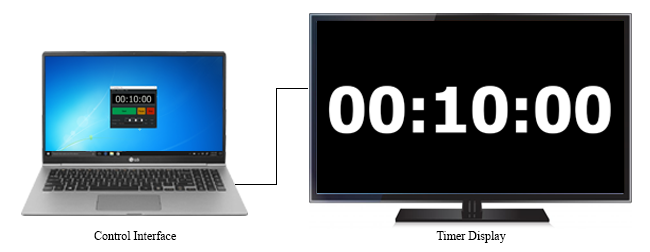
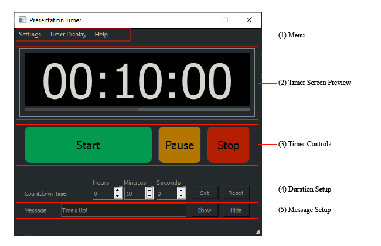
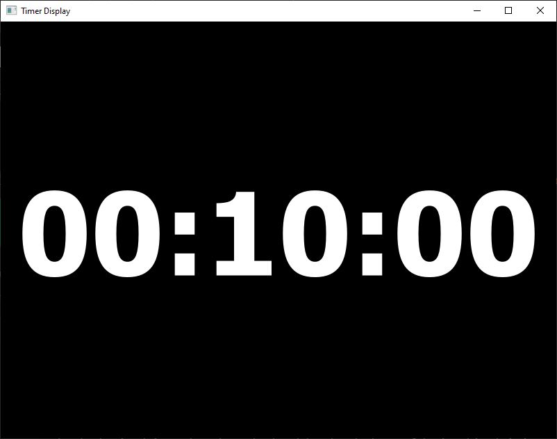

Presenter Timer was developed as a tool to communicate the allocated time and current duration with a speaker/presenter on a stage.
Initially developed for private use by Cyber Illusions. On request by few in the event industry, this is now made available for anyone to use freely.
The system is intended to use with "Extended Desktop" mode on a laptop.


Settings: Load and save timer settings and exit programme.
Timer display: Open the "Timer Display Window" in full screen or windowed mode. "Timer Display Window" can be closed only when timer is not running.
Shows the content that will display on the main timer screen. The progress bar is only visible in the preview window.
"Start", "Pause" and "Stop" the timer. If the "Start" button is pressed after the timer has been "Stopped" the timer duration will be derived from the duration setup. Pressing "Stop" will bring up the "Message" immedietly. If "Stop" is pressed and the "Message" is empty, the display will show the current remaining time.
The timer can be operated without "Timer Display Window" being launched.
Set the duration of the timer by setting "Hours", "Minutes" and "Seconds". The maximum limit for each unit is 59.
The "Message" will automatically be displayed with a red background at the end of the time duration. The "Message" can be displayed and hidden anytime by pressing the "Show" and "Hide" buttons. Leaving the "Message" blank will not display a message at the end of the timer duration.
This is useful to send a message in middle of the presentation. The background will not turn red when sending a message while the timne is running.
The "Timer Display Windows" can be launched from the main "Timer Display" menu. Once the timer is launched pressing the "F" key will toggle between full screen and window mode of the "Timer Display Windows". Similarly double clicking on the window toggle full screen mode. The winodow can be closed only when the timer is not running.
